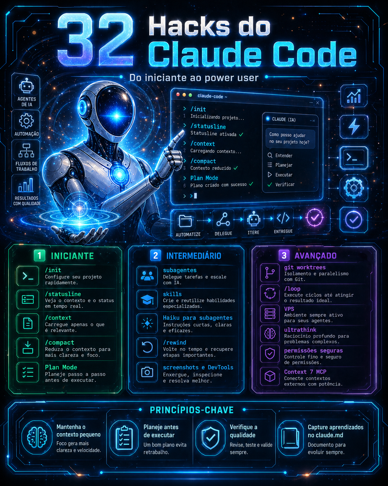
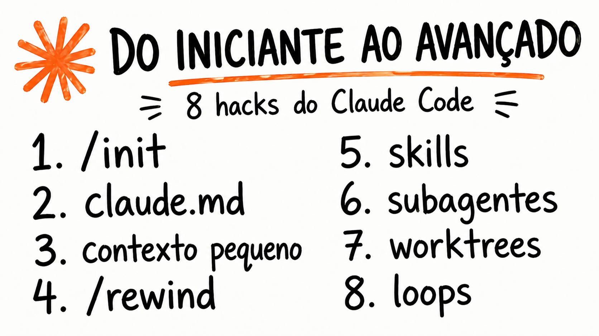

Do Iniciante ao Power User — domine as técnicas que multiplicam sua produtividade com IA.
Três trilhas progressivas, do primeiro comando ao trabalho com equipes de agentes autônomos.
Fundamentos que todo usuário do Claude Code precisa dominar.
/init e CLAUDE.md
Automatize fluxos e expanda as capacidades do Claude Code.
Técnicas de power user: fluxos complexos e equipes de agentes.
Os fundamentos que guiam cada hack deste curso — aprenda a pensar como um power user.
A janela de contexto do Claude é finita. Cada token gasto em ruído é um token a menos para o que importa. Aprenda a curar, comprimir e priorizar informações para maximizar resultados.
Deixar o Claude agir sem planejamento gera retrabalho. O plan mode força reflexão antecipada — problemas identificados na fase de planejamento custam zero para corrigir.
Não é uma ferramenta — é um colaborador. Compartilhe contexto, explique objetivos, dê feedback claro. Quanto mais você trata como parceiro, melhores os resultados.
O CLAUDE.md é a memória persistente do seu projeto. Cada decisão importante, padrão adotado e lição aprendida deve ser registrada ali — para você e para o Claude.

CLAUDE.md, statusline, permissões e atalhos que economizam horas por semana.
Crie comandos customizados e automatize tarefas repetitivas sem esforço manual.
Orquestre múltiplos agentes para tarefas complexas — o futuro do desenvolvimento.
Ative o modo de pensamento estendido para resolver problemas que exigem mais reflexão.
Referência rápida de todos os hacks, organizados por trilha e módulo.
Comece pela Trilha Iniciante e avance no seu ritmo. 32 hacks práticos, 100% gratuito, direto ao ponto.